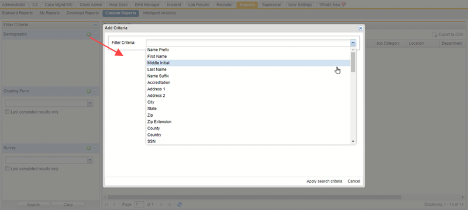
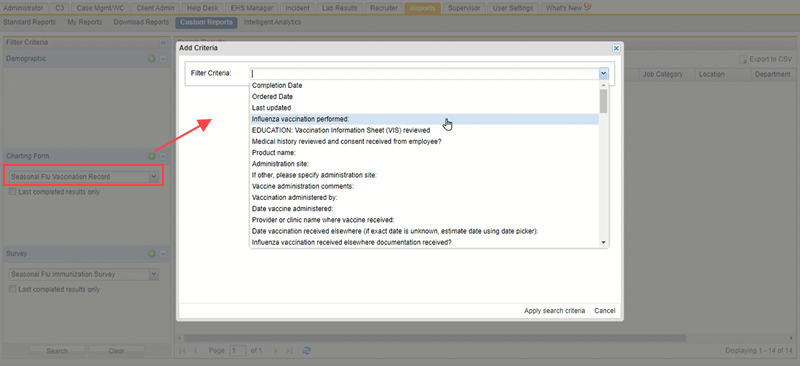
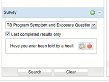
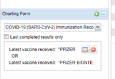
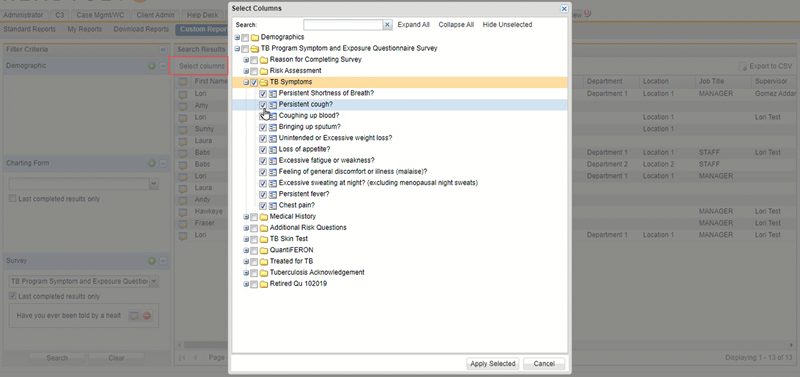
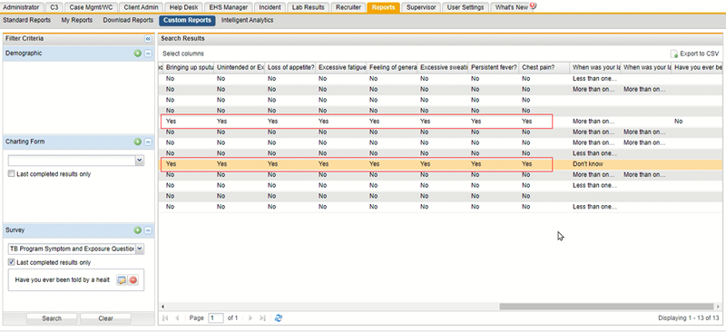
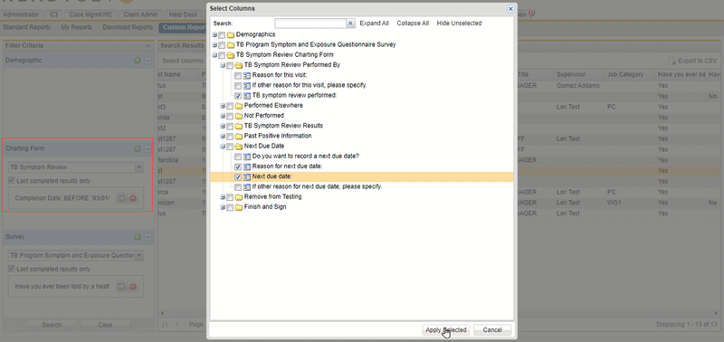

If ReadySet's standard reports don't quite provide the information you need, you can use the Custom Report feature to generate an ad hoc report of specific data points in a survey, charting form, and demographics, choose from specific fields in those selections and/or limit certain parameters, and export the results to a spreadsheet for further evaluation.
You can pick specific questions in a survey and/or charting form, along with specific dates or demographics, to filter the data to report on, and then choose what columns you want to see in the output.
Examples
To create a custom report:






